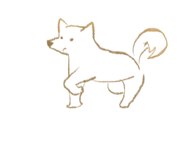

用愛終止流浪
愛牠就是一輩子的陪伴

「浪途」 正式誕生於1994年12月8日當初只為了心中的一個想法，建構出貓狗樂園！
「浪途」 是貓犬中途之家，提供適當救護及照顧給身心遭受危難的牠們，並持續探索與貓犬相處的各種可能。期許在超越種族與語言的交流裡，讓悲劇不再發生。我們初衷始終如一，用心守護毛小孩，直到牠們找到屬於自己溫暖的家庭。


我們用心呵護著
浪途 認真對待每一隻浪浪
浪途目前總共有三個照護園區，毛孩數量已多達近5000隻
裡面九成的狗狗來自收容所傷重病犬，一成來自外面救援的傷病癱瘓犬飼料、罐頭是每個月最基本的需求每個月需要3千多包的飼料醫療區體弱病、癱瘓年老的孩子，每個月需要1千多箱的營養罐頭補充體力

「浪途」 主要以救援傷重病、癱瘓犬貓為主， 當中的醫療費用數百萬是最龐大的支出
浪途的家
為提供收容毛小孩優質居住環境、提升認養率、認養品質及動物福利，發揮多功能教育性功能，將空間利用發揮最佳化，成立浪途中途之家。
浪途所在位置：112 臺北市北投區裕民三路29號 聯絡電話：(02)2685-8464

